data {
int K;
array[K] int n_obs;
array[K] int y;
}
parameters {
real<lower=0> lambda;
}
model {
lambda ~ gamma(25, 1);
for (i in 1:K)
target += n_obs[i] * poisson_lpmf(y[i] | lambda);
}2023-12-30
This will be a trivial point, but if feasible it can be more computationally efficient to work with an aggregated version of the log likelihood.
Let \(y_1, y_2, \ldots, y_N\) be a collection of i.i.d. observations with a log-likelihood function
\[ \ell(\theta | y) = \sum_{i=1}^N \log f(y_i | \theta) \]
for some arbitrary probability function \(f(\cdot)\). Obviously, we can group identical observations together where \(y_i = y_j\) for \(i \neq j\). Then,
\[ \ell(\theta | y) = \sum_{j=1}^K N_j \log f(y_j | \theta) \]
where \(N_j\) denotes the number of times \(y_j\) appears in the dataset for \(K\) unique values.
In the case where \(y_i \sim \text{Poisson}\left(\lambda \right)\), this can easily coded in Stan as follows:
data {
int K;
array[K] int n_obs;
array[K] int y;
}
parameters {
real<lower=0> lambda;
}
model {
lambda ~ gamma(25, 1);
for (i in 1:K)
target += n_obs[i] * poisson_lpmf(y[i] | lambda);
}For a simulated dataset of 2,000 observations drawn from a poisson distribution with \(\lambda = 25\), there is a decrease in runtime when using the aggregated version of the model.
library(cmdstanr)
library(dplyr)
library(ggplot2)
library(ggthemes)
library(parallel)
options(mc.cores = parallel::detectCores() - 1)
mod1 <- cmdstan_model("./poisson.stan")
mod2 <- cmdstan_model("./poisson_aggregated.stan")
bench <- function(expr) {
start <- Sys.time()
expr
end <- Sys.time()
end - start
}
stan_sample <- function(mod, data) {
mod$sample(data = data, chains = 1, show_messages = F, show_exceptions = F)
}
###
# Simulate data
N <- 2e3
lambda <- 25
y <- rpois(N, lambda)
# Model 1 data
data <- list(N = N, y = y)
# Model 2 data - aggregated
df <- data.frame(y = y) |> group_by(y) |> summarise(n = n())
agg_data <- list(K = nrow(df), n_obs = df$n, y = df$y)
###
# Run each model for `iter` iterations
iter <- 100
# I believe `mclapply` uses a process pool, so discard the first
# mc.cores iterations which will have an associated startup cost.
burnin <- 10
l1 <- mclapply(1:iter, \(i) bench(stan_sample(mod1, data)))
l2 <- mclapply(1:iter, \(i) bench(stan_sample(mod2, agg_data)))
est <- data.frame(time = c(unlist(l1[burnin+1:iter]),
unlist(l2[burnin+1:iter])),
model = c(rep("Unaggregated", iter - burnin),
rep("Aggregated", iter - burnin)))
ggplot(est, aes(x = model, y = time, color = model)) +
geom_jitter(width = 0.1, alpha = 0.5) +
xlab("Model") +
ylab("Runtime (sec)") +
theme_minimal(base_size = 12) +
theme(axis.title.x = element_text(face = "bold"),
axis.title.y = element_text(face = "bold"),
legend.position = "none") +
scale_colour_solarized()
Stan code for the unaggregated model.
data {
int N;
array[N] int y;
}
parameters {
real<lower=0> lambda;
}
model {
lambda ~ gamma(25, 1);
y ~ poisson(lambda);
}Computing environment:
sessionInfo()R version 4.3.2 (2023-10-31)
Platform: x86_64-pc-linux-gnu (64-bit)
Running under: Arch Linux
Matrix products: default
BLAS/LAPACK: /usr/lib/libopenblas.so.0.3; LAPACK version 3.12.0
locale:
[1] LC_CTYPE=en_US.UTF-8 LC_NUMERIC=C
[3] LC_TIME=en_US.UTF-8 LC_COLLATE=en_US.UTF-8
[5] LC_MONETARY=en_US.UTF-8 LC_MESSAGES=en_US.UTF-8
[7] LC_PAPER=en_US.UTF-8 LC_NAME=C
[9] LC_ADDRESS=C LC_TELEPHONE=C
[11] LC_MEASUREMENT=en_US.UTF-8 LC_IDENTIFICATION=C
time zone: Europe/Stockholm
tzcode source: system (glibc)
attached base packages:
[1] stats graphics grDevices utils datasets methods base
other attached packages:
[1] ggthemes_5.0.0 ggplot2_3.4.4 cmdstanr_0.7.1 dplyr_1.1.4
loaded via a namespace (and not attached):
[1] gtable_0.3.4 jsonlite_1.8.8 compiler_4.3.2
[4] tidyselect_1.2.0 stringr_1.5.1 parallel_4.3.2
[7] scales_1.3.0 yaml_2.3.8 fastmap_1.1.1
[10] R6_2.5.1 generics_0.1.3 distributional_0.3.2
[13] knitr_1.45 backports_1.4.1 checkmate_2.3.1
[16] tibble_3.2.1 munsell_0.5.0 pillar_1.9.0
[19] posterior_1.5.0 rlang_1.1.3 utf8_1.2.4
[22] stringi_1.8.3 xfun_0.41 cli_3.6.2
[25] withr_3.0.0 magrittr_2.0.3 ps_1.7.6
[28] digest_0.6.34 grid_4.3.2 processx_3.8.3
[31] lifecycle_1.0.4 vctrs_0.6.5 evaluate_0.23
[34] glue_1.7.0 tensorA_0.36.2.1 farver_2.1.1
[37] abind_1.4-5 fansi_1.0.6 colorspace_2.1-0
[40] purrr_1.0.2 rmarkdown_2.25 tools_4.3.2
[43] pkgconfig_2.0.3 htmltools_0.5.7 sprintf("cmdstan version: %s", cmdstan_version()) |> print()[1] "cmdstan version: 2.34.1"